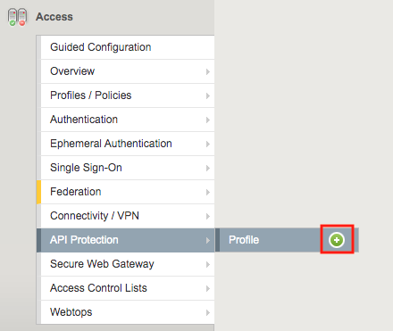
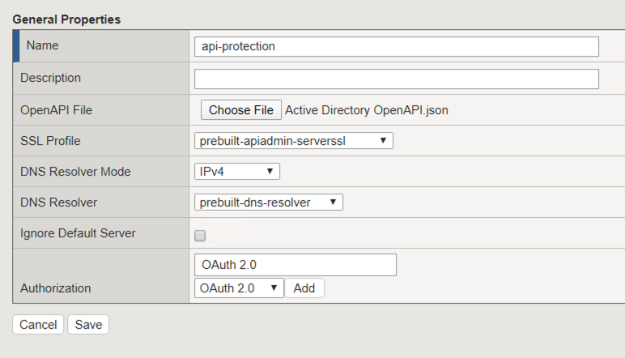
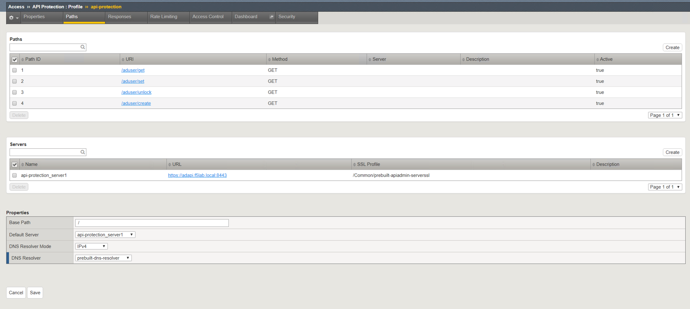
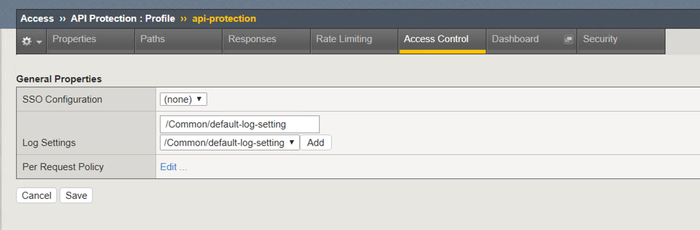

2.1.2. Lab – Create an API Protection Profile¶
The API Protection profile is a combination of APM and AWAF features to protect any API.
2.1.2.1. Task – Create an API Protection Profile¶
- From the webbrowser, click on the Access tab located on the left side.

- Navigate to API Protection >> Profile. Click the + (plus symbol).

Note
json file is located on the jumpbox in c:\Labfiles\Agility2020-API Protection
- Enter the Follow Perimeters
- Name: api-protection
- OpenAPI File: Active Directory OpenAPI.json
- SSL Profile: prebuilt-apiadmin-serverssl
- DNS Resolver: prebuilt-dns-resolver
- Authorization: OAuth 2.0
- Click Add
- Click Save

2.1.2.2. Task – Explorer the Path Configuration¶
- Not the Spec file contained four paths to various URIs
- Each URI only supports the Method GET
- The APIs server URL is https://adapi.f5lab.local:8443

2.1.2.3. Task – Associate a JWT Provider¶
- Click Access Control from the top ribbon
- Click Edit (Per Request Policy)

- Notice the same paths displayed in the API Protection profile appear here. Currently there is no fine-grain access control. We will implement it later in the lab.
- Click the + (plus symbol) next the Subroutine OAuth Scope Check AuthZ to expand its properties:

- The OAuth scope agent currently has a red asterisk since no provider is associated with it.
- Click OAuth Scope

- Enter the follow perimeters:
- Token Validation Mode: Internal
- JWT Provider List: as-jwt-provider
- Response: api-protection_auto_response1
- Click Save